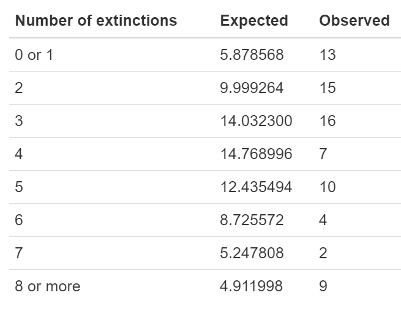
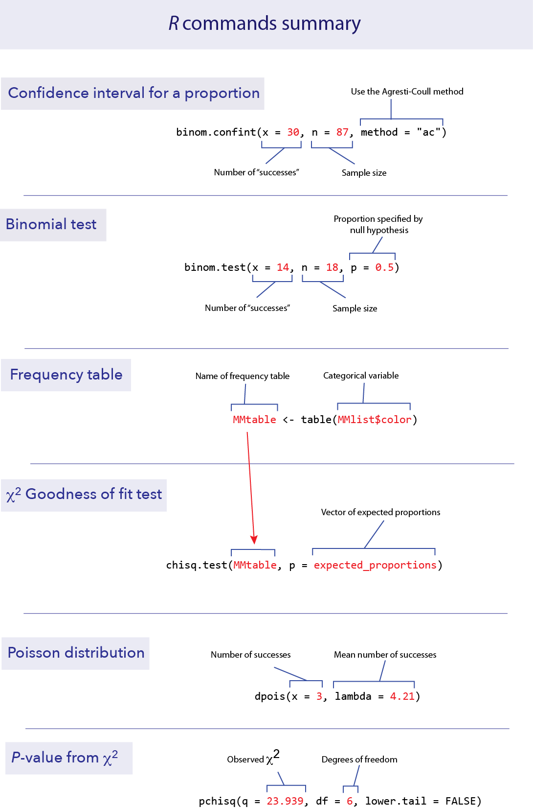

# If needed, install {binom}
# install.packages("binom", dependencies = TRUE)
library(binom)Lab 03 Frequency data
1 Objectives
Calculate a confidence interval for a proportion
Make a hypothesis test about proportions
Fit frequency data to a model
Test for a fit to a Poisson distribution
Data for all labs (unzip to your working directory)
2 Start a script!
For this and every lab or project, begin by:
starting a new script
create a good header section and table of contents
save the script file with an informative name
set your working directory
Aim to make the script useful as a future reference for doing things in R - this will come in handy for projects and assessments!
3 Confidence interval for a proportion
To calculate a confidence interval for an estimate of a proportion, we suggest using the Agresti-Coull method. This method is available in the R package “binom”, which you can install and load with the following:
Like any package, you only need to install it once, but you need to run the library() command in each session before you can use it. Once the package is installed, calculating a confidence interval for a proportion is fairly straightforward. The function you need is called binom.confint(). You need to specify:
x: the number of successes
n: the total sample size
method: “ac” for “Agresti-Coull”
For example, if we have 87 data points and 30 of them are “successes”, we can find the 95% confidence interval for the proportion of successes with the following command.
binom.confint(x = 30, n = 87, method = "ac") method x n mean lower upper
1 agresti-coull 30 87 0.3448276 0.2532164 0.4495625This tells us that the observed proportion (called “mean” here) is 0.3448, and the lower and upper bounds of the 95% confidence interval are 0.2532 and 0.4496.
4 The Binomial tests
Doing a binomial test in R is much easieR (see what I did theRe!?) than doing one by hand. You use the binomial test to decide whther some observed count of data with 2 possible outcomes is different than expected (e.g. if you count 100 coin flips you might expect 50:50)
4.1 binom.test()
The function binom.test() will do an exact binomial test. It requires three pieces of information in the input:
x for the number of “successes” observed in the data,
n for the total number of data points, and
p for the proportion given by the null hypothesis.
For example, if we have 18 toads that have been measured for a left-right preference and 14 are right-handed, we can test the null hypothesis of equal probabilities of left- and right-handedness with a binomial test. In this case, n = 18, x = 14, and p = 0.5.
binom.test(x = 14, n = 18, p = 0.5)
Exact binomial test
data: 14 and 18
number of successes = 14, number of trials = 18, p-value = 0.03088
alternative hypothesis: true probability of success is not equal to 0.5
95 percent confidence interval:
0.5236272 0.9359080
sample estimates:
probability of success
0.7777778 In this case, the output of the function gives quite a bit of information. One key element that we will be looking for is the P-value; in this case R tells us that the P-value is 0.03088. This is the P-value that corresponds to a two-tailed test.
The binom.test() function also gives an estimate of the proportion of successes (in this case 0.7777778). (It also gives an approximate 95% confidence interval for the proportion using a different method than the Agresti-Coull method that we recommend.)
5 Goodness of fit test
A chi-squared (\(\chi^2\)) goodness-of-fit test compares the frequencies of values of a categorical variable to the frequencies predicted by a null hypothesis. For example, the file MandMlist.csv contains a list of all the colors of M&M candies from one package, under the variable “color”. Let’s ask whether this fits the proportions of colors advertised by the candy company.
# Read in the data, NB your file path may be different
MMlist <- read.csv("data/MandMlist.csv")
# MMlist$color contains the color of each of 55 M&Ms.
MMlist$color [1] "brown" "blue" "blue" "green" "yellow" "yellow" "orange" "yellow"
[9] "orange" "yellow" "red" "green" "green" "orange" "orange" "yellow"
[17] "green" "blue" "red" "brown" "green" "orange" "blue" "yellow"
[25] "green" "yellow" "orange" "brown" "green" "blue" "brown" "red"
[33] "green" "orange" "blue" "blue" "green" "orange" "red" "yellow"
[41] "red" "blue" "brown" "yellow" "blue" "orange" "green" "green"
[49] "green" "blue" "orange" "yellow" "yellow" "orange" "red" 5.1 table()
Summarizing frequency data in a table is useful to see the data more concisely, and such a table is also necessary as input to the χ2 test function. We can summarize the counts (frequencies) of a categorical variable with table().
# create table
MMtable <- table(MMlist$color)
# print table
MMtable
blue brown green orange red yellow
10 5 12 11 6 11 This shows that in this list of M&M colors, 10 were blue, 5 were brown, etc.
5.2 chisq.test()
We can use a χ2 goodness-of-fit test to compare the frequencies in a set of data to a null hypothesis that specifies the probabilities of each category. In R, this can be calculated using the function chisq.test().
The company says that the percentages are 24% blue, 14% brown, 16% green, 20% orange, 13% red and 13% yellow. This is our null hypothesis. Let’s test whether these proportions are consistent with the frequencies of the colors in this bag. R requires you to proivide the proportions expected by the null hypothesis in a vector, like this:
expected_proportions <- c(0.24, 0.14, 0.16, 0.20, 0.13, 0.13)These expected proportions will use to calculate the expected frequencies.
The first thing we need to do is check whether the expected frequencies (expected by the null hypothesis) are large enough to justify using a χ2 goodness of fit test. (In other words, that no more than 25% of the expected frequencies are less than 5 and none is less than 1.)
To obtain these expected counts, multiply the vector of the expected proportions by the total sample size. We can find the total sample size by taking the sum() of the frequency table:
sum(MMtable)[1] 55So for this example, the expected frequencies from our null hypothesis are 55 multiplied by the list of expected proportions:
55 * expected_proportions[1] 13.20 7.70 8.80 11.00 7.15 7.15All of these expected values are greater than 5, so we have no problem with the assumptions of the χ2 goodness of fit test. (If there were a problem here, we’d have to combine categories. We’ll see an example of that in the next section.)
The function chisq.test() requires two arguments in its input: a frequency table from the data and a vector with the expected proportions from the null hypothesis. The name of the vector of expected proportions in this function is p. So here is the format of the R command to do a χ2 test:
chisq.test(MMtable, p = expected_proportions)
Chi-squared test for given probabilities
data: MMtable
X-squared = 5.1442, df = 5, p-value = 0.3985“X–squared” here in the output means χ2. The χ2 value for this test is 5.1442. There are 5 degrees of freedom (df) for this test, and the P-value turned out to be 0.3985. We wouldn’t reject the null hypothesis with these data.
6 Fit to a Poisson distribution
A χ2 goodness of fit test can be used to ask whether a frequency distribution of a variable is consistent with a specific distribution, like the Poisson distribution. This is a useful way to determine if the count of events in space or time are not “random” but instead are clumped or dispersed.
It turns out that this is not a straightforward process in R. In this section, we’ll highlight a couple of functions in R that will streamline doing the calculations by hand. We’ll use the data on the numbers of historical extinctions in the data file MassExtinctions.csv.
Mass extinctions Do extinctions occur randomly in Earth’s history, or are there some periods when extinctions occur at a rate higher than we would expect at random, i.e., is there evidence of “mass extinctions”? Fossil marine invertebrates constitute what is considered the best fossil record of extinctions, because they have structures that tend to preserve well. The data we examine here is a survey of the recorded number of extinctions of marine invertebrate families in 76 time blocks of similar duration through the fossil record (Raup & Seposki 1982).
# Load the data, you will probably need to supply your own file path
extinctData <- read.csv("data/MassExtinctions.csv")
number_of_extinctions <- extinctData$numberOfExtinctions
table(number_of_extinctions)number_of_extinctions
1 2 3 4 5 6 7 8 9 10 11 14 16 20
13 15 16 7 10 4 2 1 2 1 1 1 2 1 The first row lists each possible number of extinctions in a time period, ranging from 1 to 20. The second row shows the number of time periods that had each number of extinctions. (so there were 13 time periods with one extinction, 15 time periods with 2 extinctions, etc.)
The mean number of extinctions per unit of time is not specified by the null hypothesis, so we need to estimate it from the data. This mean turns out to be 4.21 extinctions per time period.
mean(number_of_extinctions)[1] 4.210526We can use this mean to calculate the probability according to a Poisson distribution of getting each specific number of extinctions.
6.1 dpois()
Fortunately, R has a function to calculate the probability of a given value under the Poisson distribution. This function is dpois(), which stands for “density of the Poisson”. dpois() requires two values for input, the mean (which is called lambda in this function) and x, the value of the outcome we are interested in (here, the number of extinctions). For example, the probability of getting x = 3 from a Poisson distribution with mean 4.21 can be found from the following:
dpois(x = 3, lambda = 4.21)[1] 0.1846355We see that the probability of getting exactly 3 successes from a Poisson distribution with mean 4.21 is about 18.5%.
dpois() will accept a vector of xs as input, and return a vector of the probabilities of those xs. A convenient short hand to know here is that R will create a vector with a range of values with a colon. For example, 0:20 is a vector with the integers from 0 to 20.
0:20 [1] 0 1 2 3 4 5 6 7 8 9 10 11 12 13 14 15 16 17 18 19 20We’ll need the probabilities for all possible values of x from 0 to 20 (because this was the largest value observed in the data). We can create a vector with the Poisson probabilities of each possibility from 0 to 20 like this:
expected_probability <- dpois(x = 0:20, lambda = 4.21)
expected_probability [1] 1.484637e-02 6.250321e-02 1.315693e-01 1.846355e-01 1.943289e-01
[6] 1.636249e-01 1.148102e-01 6.905011e-02 3.633762e-02 1.699793e-02
[11] 7.156129e-03 2.738846e-03 9.608784e-04 3.111768e-04 9.357530e-05
[16] 2.626347e-05 6.910575e-06 1.711384e-06 4.002736e-07 8.869220e-08
[21] 1.866971e-08round(expected_probability, 8) [1] 0.01484637 0.06250321 0.13156926 0.18463553 0.19432889 0.16362493
[7] 0.11481016 0.06905011 0.03633762 0.01699793 0.00715613 0.00273885
[13] 0.00096088 0.00031118 0.00009358 0.00002626 0.00000691 0.00000171
[19] 0.00000040 0.00000009 0.00000002NB! The odd numerical notation here is a shorthand for scientific notation. 1.48e-02 means 1.48 x 10-2, which is equal to 0.0148. The e stands for exponent.
Remember that we asked R to output the probability of values from 0 to 20. So the first value in this output corresponds to the probability of getting a zero, the second to the probability of getting a 1, etc.
6.2 Example chi squared test
In order to convert these probabilities into expected values for a χ2 test, we need to multiply them by the total sample size.
# the expected number of extinctions
round(length(number_of_extinctions) * expected_probability, 8) [1] 1.12832399 4.75024401 9.99926365 14.03229999 14.76899574 12.43549441
[7] 8.72557191 5.24780825 2.76165909 1.29184275 0.54386580 0.20815227
[13] 0.07302676 0.02364943 0.00711172 0.00199602 0.00052520 0.00013007
[19] 0.00003042 0.00000674 0.00000142Most of these values would cause problems for the χ2 test because they are too small (less than 1). We need to combine categories in some reasonable way so that the expected frequencies match the assumptions of the χ2 test. Let’s combine the categories for 0 and 1 successes, and combine everything greater than or equal to 8 into one category. It is possible to do this all in R, but you can also do it by hand, using the expected frequencies we just calculated. Here is a table of the expected frequencies for these new combined categories, for both the observed and expected, summing over all the possibilities within each of these groupings. (E.g., the expected frequency for the category “0 or 1” is the sum of 1.128324 and 4.750244.)

Note that these expected values are large enough to match the conditions of the χ2 test.
6.3 Do the test
Make vectors (using c()) for the observed and expected values for these new groups:
expected_combined <- c(5.878568, 9.999264, 14.032300, 14.768996, 12.435494, 8.725572, 5.247808, 4.911998)
observed_combined <- c(13, 15, 16, 7, 10, 4, 2, 9)From these we can calculate the χ2 test statistic using chisq.test()$statistic.
First we give it the list of observed values, then the expected values as \(p\). Because we are giving the list of expected frequencies rather the expected probabilities, we need to give it the option rescale.p = TRUE. Finally, by adding $statistic at the end, R will only give us the χ2 value as output. (We don’t yet want the full results of the test because R does not know to correct for the reduction in degrees of freedom caused by estimating the mean.)
chisq.test(observed_combined, p = expected_combined, rescale.p = TRUE)$statisticWarning in chisq.test(observed_combined, p = expected_combined, rescale.p =
TRUE): Chi-squared approximation may be incorrectX-squared
23.93919 This correctly calculates our χ2 value as 23.939. The warning message is because one of the expected values is under 5, but because this occurred in less than 20% of the categories, it is fine to proceed.
The degrees of freedom for this test are the number of categories minus the number of parameters estimated from the data minus one. We ended up using 8 categories and estimated one parameter from the data, so we have df = 8 – 1 – 1 = 6.
6.4 pchisq()
To calculate the correct P-value, we need to know probability of getting a χ2 value greater than 23.939 from a distribution that has 6 degrees of freedom. R has a function we can use for this, called pchisq(). We are interested here in the probability above the observed χ2 value, so we want the probability in the right (or upper) tail. To use this function, we need to specify three values: our observed χ2 (confusingly called \(q\) in this function), the degrees of freedom (called df, thank goodness), and an option that tells us to use the upper tail (lower.tail = FALSE).
pchisq(q = 23.939, df = 6, lower.tail = FALSE)[1] 0.0005359236Thus, our P-value for this test of the fit of these data to a Poisson distribution is approximately 0.0005. We reject the null hypothesis that these extinction data follow a Poisson distribution.
7 R commands summary

8 Exercises
Make a script in RStudio that collects all your R code required to answer the following questions. Include answers to the qualitative questions using comments.
8.1
Many hospitals (and airplanes) have signs posted banning mobile phone use. These bans originated from studies on early versions of mobile phones. In one such experiment, out of 510 tests with cell phones operating at near-maximum power, six disrupted a piece of medical equipment enough to hinder interpretation of data or cause equipment to malfunction. A more recent study found zero instances of disruption of medical equipment out of 300 tests.
For the older data, use binom.confint() with the Agresti-Coull method to calculate the estimated proportion of equipment disruption. What is the 95% confidence interval for this proportion?
For the data on the newer cell phones, use R to calculate the estimate of the proportion and its 95% confidence interval.
8.2
It is difficult to tell what other people are thinking, and it may even be impossible to find out what they are thinking by asking them. A series of studies shows that we do not always know how our own thought processes are carried out.
A classic experiment by Wilson and Nisbett (1978) addressed this issue in a clever way. Participants were asked to decide which of four pairs of silk stockings were better, but the four stockings that they were shown side-by-side were in fact identical. Nearly all participants were able, however, to offer reasons that they had chosen one pair over the other.
The four pairs of stockings were presented to the participants randomly with respect to which pair was in which position. However, of the 52 subjects who selected a pair of stockings, 6 chose the pair on the far left, 9 chose the pair in the left-middle, 16 chose the pair in the right-middle, and 21 chose the pair on the far right. None admitted later that the position had any role in their selection. These data are in a file called stockings.csv.
What are the expected frequencies for this scenario, under the null hypothesis that all four pairs of stockings are equally likely to be chosen?
Use chisq.test() to test the null hypothesis that the selection of the stockings was independent of position.
The function chisq.test() can take the data either as a data frame, as above, or as a vector of the observed counts, as a parameter called x as input:
chisq.test(x = c(6,9,16,21), p = c(0.25,0.25,0.25,0.25))
Chi-squared test for given probabilities
data: c(6, 9, 16, 21)
X-squared = 10.615, df = 3, p-value = 0.014Try it using the specification of the counts, to see that you get the same answer as above.
8.3
Many people believe that the month in which a person is born predicts significant attributes of that person in later life. Such astrological beliefs have no scientific support, but are there circumstances in which birth month could have a strong effect on later life? One prediction is that elite athletes will disproportionately have been born in the months just after the age cutoff used to separate levels for young players of the sport. The prediction is that those athletes that are oldest within an age group will do better by being relatively older, and therefore will gain more confidence and attract more coaching attention than the relatively younger players in their same groups. As a result, they may be more likely to dedicate themselves to the sport and do well later. In the case of football, the cutoff for different age groups is generally August.
The birth months (by three month interval) of football players competing in the Under-20’s World Tournament are recorded in the data file football_birth_quarter.csv (from Barnsley et al. 1992). Plot these data. Do you see a pattern?
The numbers of people born calculated from a large sample is recorded in the file births.csv. Compare the distribution of birth months of the football players to what would be expected by chance, assuming that the birth data for the same in “births.csv” is a good approximation for the population from which recorded players are drawn. Use the appropriate statistical test. Describe the pattern.
8.4
Is cardiac arrest equally likely to occur throughout the year? Or are some weeks more likely than others to produce cardiac arrests? One way to look at this issue is to ask whether cardiac arrests occur according to a probability model in which such events are independent of each other and equally likely at all times. If so, then the number of cardiac arrests per week will follow a Poisson distribution.
The data file “cardiacArrest.csv” contains data on the number of cardiac arrests per week from one hospital over five years. It records the number of cardiac arrests that occurred to individuals outside of the hospital who were then brought in for treatment (from Skogvoll and Lindqvist 1999).
Calculate a table of the observed frequencies of cardiac arrests per week.
What is the mean number of cardiac arrests per week?
For the mean you just calculated, use dpois() to calculate the probability of 0 cardiac arrests in a week assuming a Poisson distribution. Multiply that probability by the number of data points to calculate the expected frequency of 0 in these data under the null hypothesis of a Poisson distribution.
Here is a table of the expected frequencies under the null hypothesis. (The expected frequency for zero cardiac arrests should match your calculation above.) Are these frequencies acceptable for use in a χ2 goodness of fit test?
| Number of cardiac arrests | Expected |
|---|---|
| 0 | 34.785295 |
| 1 | 70.103698 |
| 2 | 70.640891 |
| 3 | 47.454800 |
| 4 | 23.909219 |
| 5 | 9.636973 |
| 6 or more | 4.469124 |
Create vectors in
Rfor the observed and expected frequencies.Calculate the
χ2for this hypothesis test, usingchisq.test()$statistic.How many degrees of freedom should this
χ2goodness of fit test have?Calculate the P-value for this test, using
pchisq().Summarize the results of this test. Does the frequency distribution of out-of-hospital cardiac events follow a Poisson distribution?
Harper Adams Data Science

This module is a part of the MSc in Data Science for Global Agriculture, Food, and Environment at Harper Adams University, led by Ed Harris.